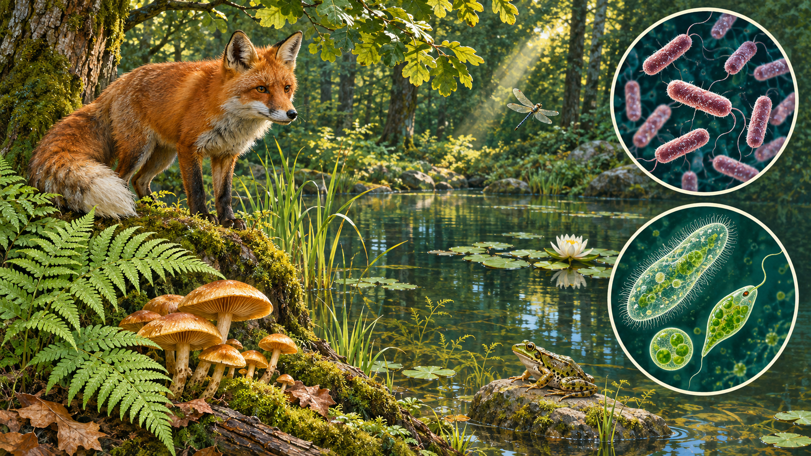

Biología · 1.º de Bachillerato
Los cinco reinos
Desde una bacteria hasta un bosque entero, la vida adopta formas muy distintas. Explora cómo se clasifican los seres vivos y practica con preguntas de cada reino.

Explora los reinos
El modelo clásico agrupa a los seres vivos según el tipo de célula, el número de células y la forma de obtener alimento. Las clasificaciones actuales también tienen en cuenta el parentesco evolutivo y distinguen bacterias y arqueas.